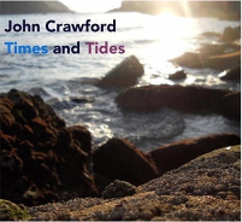

John Crawford: Times And Tides
 By MARK SULLIVAN
By MARK SULLIVAN
October 28, 2016
Blurred" shares a Brazilian heritage with the cover of Antonio Carlos Jobim's "Once I Loved" that follows it. Guitarist Guillermo Hill makes an immediate impression on nylon-string guitar: he's an effective foil to Crawford's piano. The Jobim tune also features sultry vocalist Linley Weir and saxophonist Duncan Lamont Snr.
"Solea por Brixton" (the solea is one of the most basic Flamenco forms) puts a spotlight on drummer Simon Pearson and percussionist Andres Ticino. "Gabriel's Message" changes things up ...
Read More
Tom Collier: Impulsive Illuminations
By DAN MCCLENAGHAN
October 28, 2016
 Vibraphonist Tom Collier offers up something quite different from his previous Origin Records CDs, where he covered the jazz standards like John Coltrane's "Giant Steps; Miles Davis' "So What," and some seemingly unlikely pop hits: The Rolling Stones "What a Shame" and Brian Wilson's "God Only Knows," alongside his own always engaging compositions. With Impulsive Illuminations, the thirty year University of Washington educator (now retired) explores the world of improvisation with pianist Richard Karpen, in the trio mode, with five different artists sitting in—one for each of the disc's extended tunes.
Vibraphonist Tom Collier offers up something quite different from his previous Origin Records CDs, where he covered the jazz standards like John Coltrane's "Giant Steps; Miles Davis' "So What," and some seemingly unlikely pop hits: The Rolling Stones "What a Shame" and Brian Wilson's "God Only Knows," alongside his own always engaging compositions. With Impulsive Illuminations, the thirty year University of Washington educator (now retired) explores the world of improvisation with pianist Richard Karpen, in the trio mode, with five different artists sitting in—one for each of the disc's extended tunes.
This is pure sound, the creation of atmospheres that can eliminate the listener's normal...
Read More
Nils Petter Molvær: Buoyancy
By KARL ACKERMANN
October 27, 2016
 More than thirty years ago, Norwegian trumpeter Nils Petter Molvær had left his mark as an exceptional improviser with his ECM Records debut on Masquarelo's Bande à Part (1985). Those beginnings—in the company of Nordic jazz legends—led Molvær to an ongoing process of nurturing his musical sensibilities across electronic grooves, club beats, jazz, and more genre-defying styles. Molvær's new quartet offers Buoyancy, a natural progression from 2014's Switch (Okeh).
More than thirty years ago, Norwegian trumpeter Nils Petter Molvær had left his mark as an exceptional improviser with his ECM Records debut on Masquarelo's Bande à Part (1985). Those beginnings—in the company of Nordic jazz legends—led Molvær to an ongoing process of nurturing his musical sensibilities across electronic grooves, club beats, jazz, and more genre-defying styles. Molvær's new quartet offers Buoyancy, a natural progression from 2014's Switch (Okeh).
Geir Sundstöl on guitars and banjo and Erland Dahlen on drums, percussions, xylophone and piano were part...
Read More
Gilles Peterson: The BBC Sessions Vol. 1
By ROKAS KUCINSKAS
October 27, 2016
 To this day Gilles Peterson transcends more eclecticism than most music broadcasters on air, and perhaps the only genre continuously omitted from his shows is classical music. Peterson owns Brownswood Records, produces Worldwide Awards, and recently launched his radio station Worldwide FM, which was also featured in the latest Grand Theft Auto sequel, i.e. GTA V. He is a touring DJ and one of the biggest record collectors in the world. Not enough?
To this day Gilles Peterson transcends more eclecticism than most music broadcasters on air, and perhaps the only genre continuously omitted from his shows is classical music. Peterson owns Brownswood Records, produces Worldwide Awards, and recently launched his radio station Worldwide FM, which was also featured in the latest Grand Theft Auto sequel, i.e. GTA V. He is a touring DJ and one of the biggest record collectors in the world. Not enough?
Well, the man is also associated with the rise of Acid jazz music, which he popularized back in the 90s via his radio shows on Jazz FM and Kiss ...
Read More